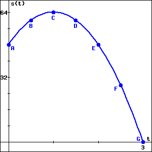

Exploration 2.6.1. Good test problem, scaffolded, dropdown, radio buttons, check that answers restore.
Suppose that the height \(s\) of a ball (in feet) at time \(t\) (in seconds) is given by the formula \(s(t) = 64 - 16(t - 1)^2\text{.}\) This function is graphed below on the interval \(0 \leq t \leq 3\text{.}\)

(a) Part a.
Which labeled point (A-G) corresponds to the release of the ball?
How high (in feet) was the ball when it was released?
Which labeled point corresponds to the highest point of the ball?
When (in seconds after being released) did the ball reach its highest point?
Which labeled point corresponds to the ball hitting the ground?
How long (in seconds) after being released did the ball hit the ground?
(b) Part b.
Which option best describes the behavior of the ball on the time interval \(0 \lt t \lt 1\text{?}\)
- The ball is rising.
- The ball is falling.
- The ball changes direction.
- The ball is released.
- The ball hits the ground.
Which option best describes the behavior of the ball on the time interval \(1 \lt t \lt 3\text{?}\)
- The ball is rising.
- The ball is falling.
- The ball changes direction.
- The ball is released.
- The ball hits the ground.
What occurs at the instant \(t=1\text{?}\)
- The ball is rising.
- The ball is falling.
- The ball changes direction.
- The ball is released.
- The ball hits the ground.
(c) Part c.
Consider the following expression.
\begin{equation*}
AV_{[0.5,1]} = \frac{s(1)-s(0.5)}{1-0.5}
\end{equation*}
Compute the value of \(AV_{[0.5,1]}\text{.}\)
What does this value measure geometrically?
- slope. The slope of the line between the points \((0.5, s(0.5)) \) and \((1, s(1)) \text{.}\)
- curvature. The curvature of the graph of \(s\) on the interval \(0.5 \leq t \leq 1 \text{.}\)
- area. The area under the graph of \(s\) on the interval \(0.5 \leq t \leq 1 \text{.}\)
- distance. The distance between the points \((0.5, s(0.5)) \) and \((1, s(1)) \text{.}\)
What does this value measure physically?
- average velocity. The average velocity of the ball during the interval \(0.5 \leq t \leq 1 \text{.}\)
- distance. The distance that the ball travels during the interval \(0.5 \leq t \leq 1 \text{.}\)
- acceleration. The acceleration of the ball during the interval \(0.5 \leq t \leq 1 \text{.}\)
What are the units on \(AV_{[0.5,1]}\text{?}\)
- feet per second
- feet
- seconds
- feet per second squared
- foot seconds
- none of these